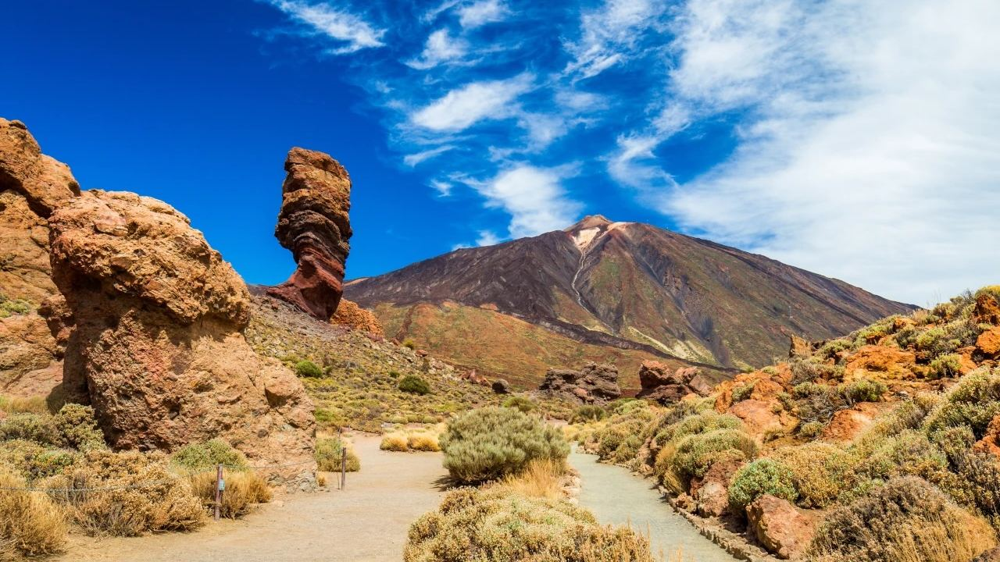
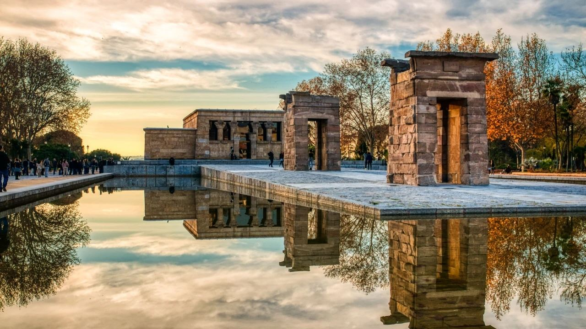
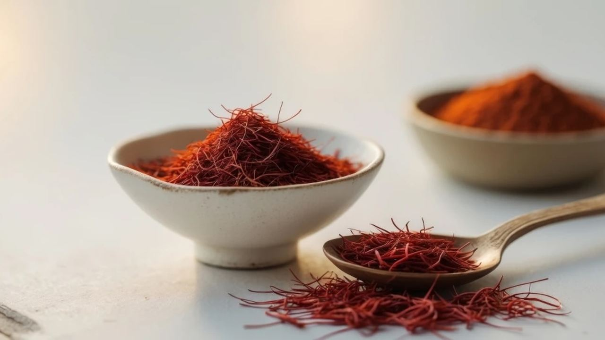
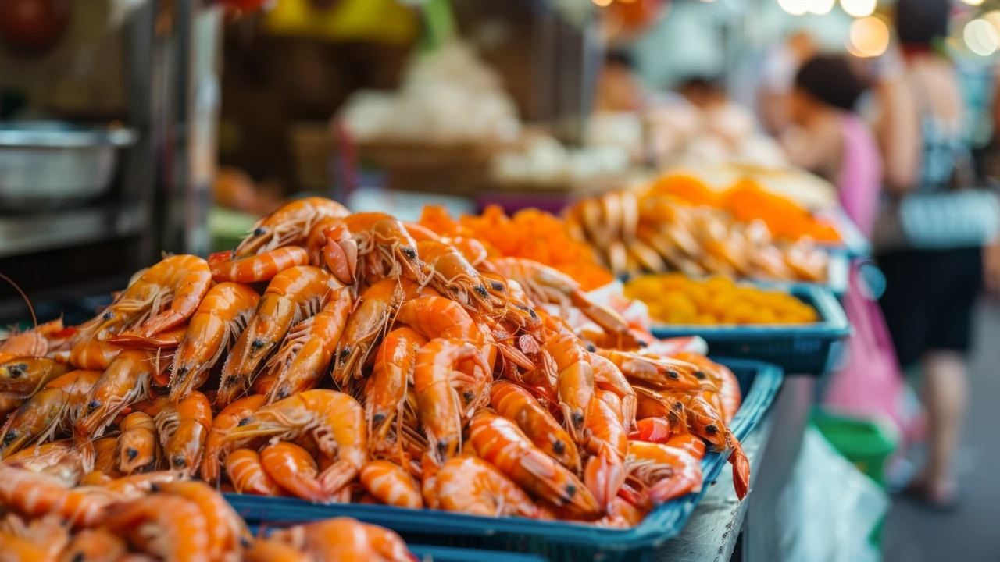
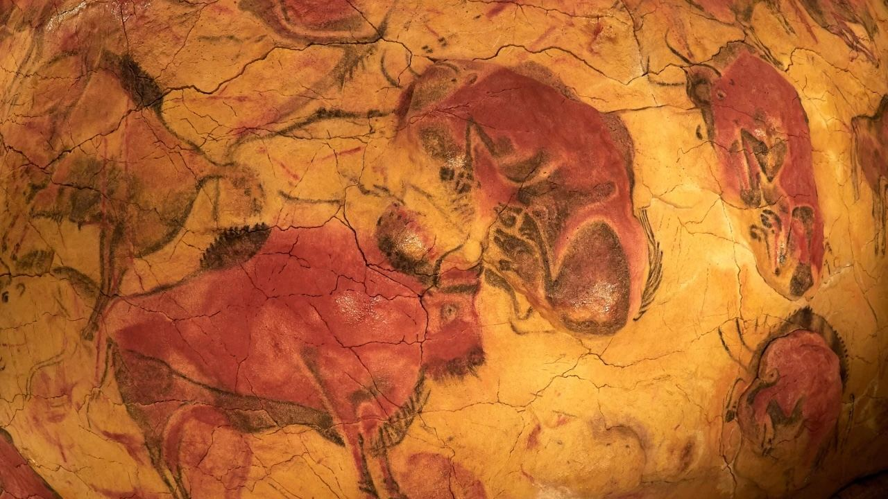
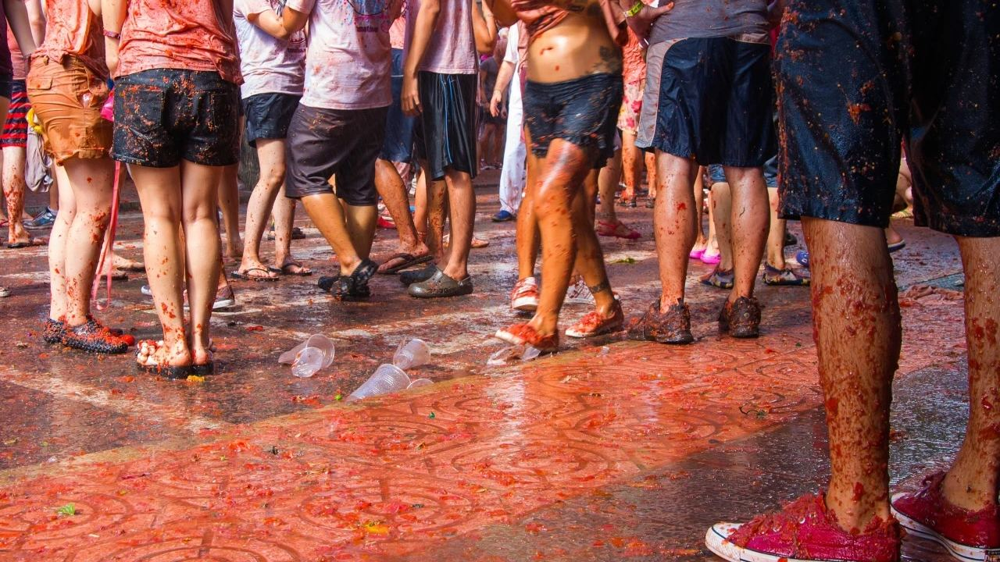

Living in Spain · Culture
15 Interesting Facts About Spain
 By Lucyna Gacek · · updated · 4 min read
By Lucyna Gacek · · updated · 4 min read

In short: Spain has an Egyptian temple in Madrid, the world's oldest restaurant, Ice Age cave paintings, a whistled language in the Canary Islands and a tooth mouse instead of a tooth fairy. It has one of the highest numbers of UNESCO World Heritage Sites, more Blue Flag beaches than any other country and Spanish is spoken by about 600 million people worldwide.
You may know Spain for its beaches, tapas and football. But the country has many surprises, from ancient monuments to quirky traditions. Here are 15 facts we love telling friends and clients, checked and updated for 2026.
History

1. An Egyptian temple in Madrid. The Temple of Debod was built in the 2nd century BC near Aswan. Egypt gave it to Spain in 1968 to thank it for helping save Nubian monuments from the waters of the Aswan Dam, and it was rebuilt stone by stone in a Madrid park.
2. The empire on which the sun never set. In the 16th century, under Charles V and Philip II, Spain ruled lands from the Americas to the Philippines, so it was always daytime somewhere in the empire.
3. Ice Age masterpieces. The Altamira cave in Cantabria holds some of the finest prehistoric paintings in the world, made up to about 36,000 years ago. They were discovered in 1879 by eight-year-old María, the daughter of the amateur archaeologist exploring the cave.
Food

4. The world's oldest restaurant. Sobrino de Botín in Madrid has served roast suckling pig since 1725 and is listed by Guinness World Records as the oldest restaurant still operating. Hemingway mentioned it in his novels.
5. Red gold. Saffron, the most expensive spice in the world, was brought to Spain by the Moors. La Mancha saffron has protected origin status, and Consuegra celebrates it with a festival on the last weekend of October.
6. Spanish lollipops. Chupa Chups was founded in Barcelona in 1958 by Enric Bernat. Its famous daisy logo was designed by Salvador Dalí.
Language and traditions

7. A sleepy shrimp. A favourite saying is camarón que se duerme, se lo lleva la corriente: the shrimp that falls asleep is swept away by the current. In other words, stay alert or you will miss your chance.
8. Several official languages. Spanish is official everywhere, and Catalan (called Valencian in the Valencian Community), Galician and Basque are co-official in their regions. On La Gomera in the Canary Islands, people still use Silbo Gomero, a whistled language listed by UNESCO in 2009.
9. About 600 million speakers. According to the Instituto Cervantes, Spanish has around 600 million speakers worldwide and is official in 21 countries. It is the second most spoken native language after Mandarin Chinese.
Places and landscapes

10. Spain in Africa. The autonomous cities of Ceuta and Melilla lie on the north coast of Africa, as do the Canary Islands off its west coast.
11. Almost 8,000 km of coastline. Including the islands, Spain's coast is close to 8,000 km long, on the Mediterranean, the Atlantic and the Bay of Biscay. And Spain has had more Blue Flag beaches than any other country for many years running.
12. A world of heritage. With around 50 UNESCO World Heritage Sites, Spain is among the five countries with the most. They include the Alhambra, the Sagrada Família, Teide National Park and, close to our office, the Palm Grove of Elche and the Mystery Play of Elche.
Everyday life

13. The siesta is more of a long lunch. The word comes from the Latin hora sexta, the sixth hour after dawn. Few Spaniards nap every day now, but many small shops still close from about 14:00 to 17:00, and lunch is the main meal.
14. The tooth mouse. Spanish children do not wait for a tooth fairy: Ratoncito Pérez collects their teeth. He was created in 1894 by the writer Luis Coloma for the young King Alfonso XIII, and he has a small museum in Madrid.
15. The world's biggest food fight. On the last Wednesday of August, thousands of people throw around 120 tonnes of ripe tomatoes at each other in Buñol, near Valencia. La Tomatina began by chance in 1945, and today you need a ticket to join.
Frequently asked questions
What is Spain famous for?
Its beaches and sunshine, food such as tapas, paella and jamón, football, flamenco, festivals such as La Tomatina, and monuments like the Alhambra and the Sagrada Família.
How many languages are spoken in Spain?
Spanish is official everywhere, and Catalan (Valencian), Galician and Basque are co-official in their regions. Aranese is co-official in a small part of Catalonia.
What is the oldest restaurant in the world?
Sobrino de Botín in Madrid, open since 1725, according to Guinness World Records.
How many UNESCO sites does Spain have?
About 50, which puts it among the five countries with the most World Heritage Sites.
A country that keeps surprising
The longer you spend in Spain, the more you discover. If you would like to explore it from your own home on the coast, tell us what you are looking for. We will help you find a place on the Costa Blanca or Costa del Sol to start your own collection of Spanish surprises.
Sources: UNESCO – World Heritage List: Spain · Foundation for Environmental Education – Blue Flag